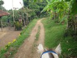
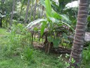
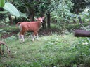
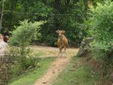
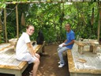
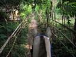
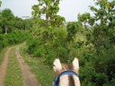
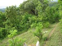
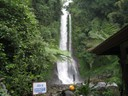

Resor · 2010-10-15 @ 09:00:49 Allmänt Permalink
En dag på en bergsluttning, Lovina
Bergs luttning
Bergs lutning?
sluttning, visst heter det så?
Det är varmt här.
I går, så, visst kollade jag två ställen med gigantiska skyltar utanför med "Karaoke" på. Det första var det två thai-par som sjöng thai. Det andra var det bara 3 i personalen på, inga andra. Och de var inte så intresserade av att prata med mig, för de kunde inte, alls.
Det är ju många asiater överallt ifrån som har semester här också, världen är inte bara engelsktalande sägs det.
Men han lovar i dörrn att de har engelsk karaoke… Jo men visst. En hel skiva! Varav tre låtar med Humbernickel och annat jag aldrig hört talas om.
Hans hela utbud är kanske 20 skivor, Malaysiskt, thai, indonesiskt mm
Jag åker hem.
http://www.youtube.com/watch?v=ErGxhjpuBqQ
Men kl 7 på morgonen får jag en kopp kaffe och åker till "Pegasus farm".
Det här är något jag rekommenderar. Ett ungt par, hon (Tanja) från NZ och han (omöjligt att minnas) från Bali driver en lten organisk ranch, och påverkar lokalpolitiken. Hon har fått staten att asfaltera vägen, byborna att samordna trädfällning och odla organiskt. Så två timmars ridtur i ett oerhört vackert landskap, enkla byar och gårdar med lite kreatur och odlingar, Rent och fint!
De erbjuder också promenader i området, och …ja, ska ni till Bali så gör det. Här är ett ställe att bo! Om man har nåt att göra. De försöker styra vilka som köper land, så det håller sig levande och inte blir öde områden pga investeringsköpare.
Hästen var en liten stark blandras, arabiskt och javanesiskt. Inte så snygg men söt, som en mager isabellfärgad D ponny. Han tog mig utan vidare upp och ner för sluttningarna. Marcus. Vi mötte både skräckslagna kor och kycklingar.
Efter det åkte jag vilse några repor upp och ner längs bergssidan, men det svalkar och är lite kul. Tills jag hittade
Vägen att gå från parkering till fall var ca 800m trappor, kantad av försäljare. Gör de så med flit? Eller måste saker som är värda något kräva en kamp, vara lite jobbigt att nå, det ska inte vara enkelt. I så fall måste det vara därför kvinnor är så knepiga!
Bergs lutning?
sluttning, visst heter det så?
Det är varmt här.
I går, så, visst kollade jag två ställen med gigantiska skyltar utanför med "Karaoke" på. Det första var det två thai-par som sjöng thai. Det andra var det bara 3 i personalen på, inga andra. Och de var inte så intresserade av att prata med mig, för de kunde inte, alls.
Det är ju många asiater överallt ifrån som har semester här också, världen är inte bara engelsktalande sägs det.
Men han lovar i dörrn att de har engelsk karaoke… Jo men visst. En hel skiva! Varav tre låtar med Humbernickel och annat jag aldrig hört talas om.
Hans hela utbud är kanske 20 skivor, Malaysiskt, thai, indonesiskt mm
Jag åker hem.
















http://www.youtube.com/watch?v=ErGxhjpuBqQ
Men kl 7 på morgonen får jag en kopp kaffe och åker till "Pegasus farm".
Det här är något jag rekommenderar. Ett ungt par, hon (Tanja) från NZ och han (omöjligt att minnas) från Bali driver en lten organisk ranch, och påverkar lokalpolitiken. Hon har fått staten att asfaltera vägen, byborna att samordna trädfällning och odla organiskt. Så två timmars ridtur i ett oerhört vackert landskap, enkla byar och gårdar med lite kreatur och odlingar, Rent och fint!
De erbjuder också promenader i området, och …ja, ska ni till Bali så gör det. Här är ett ställe att bo! Om man har nåt att göra. De försöker styra vilka som köper land, så det håller sig levande och inte blir öde områden pga investeringsköpare.
Hästen var en liten stark blandras, arabiskt och javanesiskt. Inte så snygg men söt, som en mager isabellfärgad D ponny. Han tog mig utan vidare upp och ner för sluttningarna. Marcus. Vi mötte både skräckslagna kor och kycklingar.
Efter det åkte jag vilse några repor upp och ner längs bergssidan, men det svalkar och är lite kul. Tills jag hittade


"Gitgit waterfalls". Som är ett, vattenfall och inte så mycket mer. Jag doppade mig där, framför förvånade tyskar, men det var inte så bra. Jag tror det finns ett finare ställe, lengleng eller singsing.Vägen att gå från parkering till fall var ca 800m trappor, kantad av försäljare. Gör de så med flit? Eller måste saker som är värda något kräva en kamp, vara lite jobbigt att nå, det ska inte vara enkelt. I så fall måste det vara därför kvinnor är så knepiga!